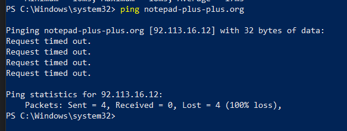
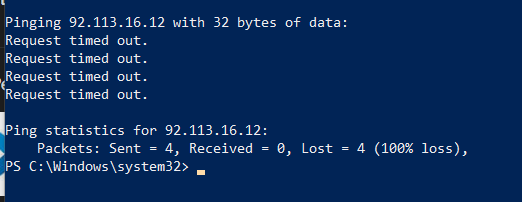

Сайт с загрузкой Notepad++ не работает без VPN. Его заблокировали?
https://notepad-plus-plus.org/downloads/


Оказалось что все сайты по этому домену убиты
Ну да, не открывается без шаманства 
Это может быть связано с ECH?
Насколько я вижу, он не использует cloudflare, поэтому нет
Нашли виновных
А сами сайты уже давным давно съехали
{kind=link}
Обмен пакетами с notepad-plus-plus.org [77.37.55.3] с 32 байтами данных:
Ответ от 77.37.55.3: число байт=32 время=32мс TTL=50
Айпишники разные у нас. Спасибо что нашли работающий!
{kind=link}
вты чё тока проснулся В России начинается эпидемия запретов иностранных хостинг-провайдеров
Прогнал notepad-plus-plus.org через свою прогу для поиска айпишников, ну и…
Спойлер
145.223.124.101
145.223.124.107
145.223.124.110
145.223.124.111
145.223.124.118
145.223.124.125
145.223.124.13
145.223.124.133
145.223.124.138
145.223.124.139
145.223.124.152
145.223.124.157
145.223.124.159
145.223.124.163
145.223.124.165
145.223.124.177
145.223.124.183
145.223.124.184
145.223.124.188
145.223.124.189
145.223.124.195
145.223.124.209
145.223.124.210
145.223.124.217
145.223.124.222
145.223.124.223
145.223.124.224
145.223.124.23
145.223.124.233
145.223.124.238
145.223.124.239
145.223.124.24
145.223.124.249
145.223.124.25
145.223.124.251
145.223.124.26
145.223.124.35
145.223.124.36
145.223.124.42
145.223.124.51
145.223.124.61
145.223.124.66
145.223.124.77
145.223.124.80
145.223.124.83
145.223.124.90
145.223.124.95
147.79.105.115
147.79.105.135
147.79.105.157
147.79.105.158
147.79.105.184
147.79.105.192
147.79.105.211
147.79.105.221
147.79.105.98
147.79.116.140
147.79.116.178
147.79.116.2
147.79.116.202
147.79.119.199
147.79.119.2
147.79.119.206
147.79.119.222
147.79.119.234
147.79.119.38
147.79.119.39
147.79.120.173
147.79.120.23
147.79.120.69
147.79.69.193
147.79.69.71
147.79.69.78
147.79.72.12
147.79.72.126
147.79.72.127
147.79.72.129
147.79.72.13
147.79.72.137
147.79.72.153
147.79.72.155
147.79.72.160
147.79.72.161
147.79.72.169
147.79.72.177
147.79.72.183
147.79.72.189
147.79.72.20
147.79.72.209
147.79.72.228
147.79.72.236
147.79.72.249
147.79.72.251
147.79.72.28
147.79.72.39
147.79.72.4
147.79.72.55
147.79.72.66
147.79.72.68
147.79.72.71
147.79.72.74
147.79.72.80
147.79.72.97
147.79.79.0
147.79.79.1
147.79.79.103
147.79.79.110
147.79.79.112
147.79.79.118
147.79.79.120
147.79.79.135
147.79.79.140
147.79.79.145
147.79.79.147
147.79.79.149
147.79.79.163
147.79.79.166
147.79.79.168
147.79.79.170
147.79.79.171
147.79.79.190
147.79.79.196
147.79.79.206
147.79.79.221
147.79.79.222
147.79.79.227
147.79.79.230
147.79.79.233
147.79.79.239
147.79.79.31
147.79.79.32
147.79.79.35
147.79.79.39
147.79.79.40
147.79.79.50
147.79.79.51
147.79.79.53
147.79.79.58
147.79.79.61
147.79.79.65
147.79.79.75
147.79.79.89
147.79.79.94
148.135.128.10
148.135.128.165
148.135.128.171
148.135.128.178
148.135.128.184
148.135.128.203
148.135.128.218
148.135.128.50
148.135.128.94
153.92.12.149
153.92.12.213
179.61.189.153
179.61.189.200
179.61.189.208
179.61.189.240
179.61.189.246
179.61.189.35
179.61.189.53
185.124.137.100
185.124.137.170
185.170.199.189
185.170.199.33
185.170.199.51
185.77.97.128
185.77.97.136
185.77.97.200
185.77.97.233
185.77.97.237
185.77.97.70
191.101.104.107
191.101.104.143
191.101.104.165
191.101.104.166
191.101.104.191
191.101.228.106
191.101.228.108
191.101.228.109
191.101.228.113
191.101.228.155
191.101.228.166
191.101.228.2
191.101.228.206
191.101.228.223
191.101.228.233
191.101.228.238
191.101.228.254
191.101.228.30
191.101.228.60
191.96.144.114
191.96.144.149
191.96.144.185
191.96.144.23
191.96.144.93
193.58.105.170
193.58.105.173
193.58.105.231
193.58.105.250
193.58.105.95
195.200.9.178
195.200.9.216
195.200.9.68
195.200.9.71
195.35.60.10
195.35.60.140
195.35.60.15
195.35.60.183
195.35.60.247
195.35.60.43
195.35.60.46
195.35.60.53
195.35.60.59
195.35.60.68
195.35.60.89
212.1.212.134
212.1.212.167
212.1.212.2
212.1.212.207
212.1.212.221
212.1.212.3
37.98.151.162
37.98.151.179
37.98.151.182
37.98.151.248
37.98.151.41
37.98.151.42
37.98.151.66
37.98.151.93
77.37.115.151
77.37.115.164
77.37.115.199
77.37.115.205
77.37.115.245
77.37.115.252
77.37.115.35
77.37.115.47
77.37.115.5
77.37.115.81
77.37.115.84
77.37.115.88
77.37.115.9
77.37.42.103
77.37.42.109
77.37.42.18
77.37.42.198
77.37.42.200
77.37.42.232
77.37.42.33
77.37.42.47
77.37.42.51
77.37.42.59
77.37.42.67
77.37.42.76
77.37.42.97
77.37.48.128
77.37.48.170
77.37.48.201
77.37.48.239
77.37.48.28
77.37.48.61
77.37.50.11
77.37.50.52
77.37.50.76
77.37.53.207
77.37.53.236
77.37.53.30
77.37.53.86
77.37.55.107
77.37.55.145
77.37.55.159
77.37.55.199
77.37.55.235
77.37.55.84
77.37.66.1
77.37.66.118
77.37.66.144
77.37.66.171
77.37.66.189
77.37.66.199
77.37.66.218
77.37.66.238
77.37.66.24
77.37.66.245
77.37.66.251
77.37.66.77
77.37.75.11
77.37.75.111
77.37.75.12
77.37.75.151
77.37.75.184
77.37.75.194
77.37.75.207
77.37.75.253
77.37.75.41
77.37.75.50
77.37.75.76
77.37.75.99
77.37.76.101
77.37.76.161
77.37.76.165
77.37.76.232
77.37.76.246
77.37.76.250
77.37.76.63
77.37.83.112
77.37.83.129
77.37.83.198
77.37.83.44
77.37.83.49
77.37.83.63
84.32.84.107
84.32.84.11
84.32.84.111
84.32.84.112
84.32.84.113
84.32.84.125
84.32.84.127
84.32.84.131
84.32.84.139
84.32.84.142
84.32.84.15
84.32.84.150
84.32.84.151
84.32.84.157
84.32.84.162
84.32.84.169
84.32.84.177
84.32.84.181
84.32.84.183
84.32.84.194
84.32.84.198
84.32.84.201
84.32.84.204
84.32.84.207
84.32.84.211
84.32.84.213
84.32.84.226
84.32.84.230
84.32.84.236
84.32.84.237
84.32.84.241
84.32.84.242
84.32.84.246
84.32.84.248
84.32.84.254
84.32.84.3
84.32.84.30
84.32.84.37
84.32.84.44
84.32.84.45
84.32.84.48
84.32.84.54
84.32.84.55
84.32.84.6
84.32.84.63
84.32.84.66
84.32.84.72
84.32.84.79
84.32.84.81
84.32.84.9
84.32.84.91
84.32.84.96
84.32.84.97
84.32.84.99
88.222.243.13
88.222.243.48
88.223.87.105
88.223.87.107
88.223.87.110
88.223.87.111
88.223.87.113
88.223.87.117
88.223.87.122
88.223.87.134
88.223.87.136
88.223.87.143
88.223.87.144
88.223.87.149
88.223.87.15
88.223.87.151
88.223.87.156
88.223.87.169
88.223.87.191
88.223.87.2
88.223.87.204
88.223.87.211
88.223.87.217
88.223.87.220
88.223.87.228
88.223.87.235
88.223.87.253
88.223.87.29
88.223.87.32
88.223.87.4
88.223.87.41
88.223.87.5
88.223.87.52
88.223.87.56
88.223.87.6
88.223.87.60
88.223.87.65
88.223.87.7
88.223.87.8
88.223.87.80
88.223.87.89
88.223.91.46
89.116.109.130
89.116.109.20
89.116.213.106
89.116.213.136
89.116.213.142
89.116.213.150
89.116.213.160
89.116.213.191
89.116.213.199
89.116.213.224
89.116.213.46
91.108.100.103
91.108.100.225
91.108.100.233
91.108.100.237
91.108.100.240
91.108.100.43
91.108.100.85
91.108.100.86
91.108.103.124
91.108.103.66
91.108.106.198
91.108.119.149
91.108.119.231
91.108.123.103
91.108.123.179
91.108.123.232
91.108.123.75
91.108.127.121
91.108.127.142
91.108.127.202
91.108.127.205
91.108.127.44
91.108.127.52
91.108.127.53
91.108.127.63
91.108.98.136
91.108.98.218
91.108.98.243
91.108.98.46
91.108.98.49
91.108.98.54
91.108.98.94
91.108.99.165
91.108.99.175
91.108.99.18
91.108.99.194
91.108.99.56
91.108.99.68
91.108.99.8
92.112.183.126
92.112.198.125
92.112.198.142
92.112.198.160
92.112.198.186
92.112.198.219
92.112.198.46
92.113.16.101
92.113.16.102
92.113.16.107
92.113.16.116
92.113.16.15
92.113.16.188
92.113.16.214
92.113.16.215
92.113.16.217
92.113.16.225
92.113.16.240
92.113.16.245
92.113.16.89
92.113.16.98
92.113.23.102
92.113.23.124
92.113.23.174
92.113.23.18
92.113.23.227
92.113.23.4
92.113.23.6
92.113.23.77
92.113.23.83
93.127.179.149
93.127.179.179
93.127.179.207
93.127.187.106
93.127.187.124
93.127.187.132
93.127.187.139
93.127.187.214
93.127.187.3
93.127.187.44
93.127.187.52
93.127.187.79
93.127.187.80
93.127.187.81
93.127.196.113
93.127.196.145
93.127.196.152
93.127.196.189
93.127.196.39
93.127.196.44
93.127.196.52
93.127.196.85
93.127.196.97
93.127.201.10
93.127.201.110
93.127.201.123
93.127.201.171
93.127.201.196
93.127.201.219
93.127.201.55
)) жесть
нафига им столько интересно
вот ятут выкладывал кароч список ихних понтсетей если кому над
типа для балансировки нагрузки я хз
Так это наверно сам провайдер выдаёт сетку адресов, а не чисто notepad
Да что с этим Ркн не так, что в notepad ++ запрещённого?
с помощью него можно редактировать конфигурации для vpn, и стратегии для запрета
Там автор писал в релиз нотах невообразимую current thing хuйhю под каждым коммитом. Уже года 4 причем
@rewhat rewhat
А ну да логично, как я сам не догадался.

@anon9001
Я не программист я в этом не шарю.
видимо речь о том, что автор notepad++ к новым версиям писал некоторые политические вещи, google.
7-zip сайт был заблокирован несколько лет подряд, и ничего. Просто добавляете сайт в список запрета и пляшете дальше.
Лично я уже давно не обращаю внимание, если сайт не работает.
В том то и дело что забанили по айпи, нужно менять hosts, просто добавить не получается
Мм, ну тогда расширение в браузер прокси или впн и в путь. Нотпад раз в несколько лет качается. У меня вот версия 22 года еще.
Да проблема не в этом, а в том что весёлая ситуация. Ещё бы они сайт с инструкцией по готовке пельменей заблокировали.
Скачать Notepad++ и с гитхаба можно
Я не знаю почему ты проверяешь пингом, это совершенно не нужная и совсем крайняя проверка. Проверяют курлом c -v флагом, если только резолв в ип виден и ничего дальше, то это тотальная блокировка по ип. Если видно clienthello, а потом виснет, то это по сни, и не тотально.
Да я быстро хотел проверить, в любом случае очевидно что запретом это не решается. Или решается, но искать конфиг лень, проще айпишник сменить для ресурса.
Мне иногда попадаются заблоченые ип (даже с гитхабом было) там можно через хостс “исправить”
Ну ведь в 70-ые исправляли hosts, нельзя забывать истоки.
Ну значит моя ошибка, нас не 25 лет заслали в прошлое, а на 55
Это целенаправленная программа по обучению населения основам компьютерной грамотности 
Все новое - это хорошо забытое старое 
А вообще хз, мне даже нравится. Не то чтобы мазохист, но интересно, когда появляется какой-то челлендж - так веселее что ли.
Вот представь зашел ты на ютуб просто так - никакого удовольствия. А когда туда надо пробиваться - больше азарта и кайфа.
У такого предел есть. Обмениваться флешками и дисками конечно тоже романтично, но надеюсь мы не дойдем до подобного)
У кого вопросы почему не открывается - зайдите на сайт и посмотрите в разделе “News” например.
Странно, что у него сайт через тор не открывается (ERR_SSL_PROTOCOL_ERROR). Тоже мне сайт пентагона.
Там совсем мелочь, пара страниц за три года, и нашим цензорам видимо все равно на инглиш, раз реддит до сих пор не в блоке. Вот там русофобия термальная, уже сколько лет.
По некоторым базам этот конкретный адрес бьётся, как принадлежащий Укртелекому, причина, скорее всего, в этом.
На йоте тоже не открывается.
Сайт пока что открывается на айпи 93.127.187.196
Но уже давно качаю с зеркала Notepad++ download | SourceForge.net потому что устал от того, что автор постоянно форсит свою ненависть к Китаю в названиях релизов.
Думал что данный сайт забанили нелегитимно и обратился в саппорт провайдера. Ну вдруг пиринг до AS отвалился.
По WHOIS диапозон числится за немецким HOSTINGER DE поэтому я предположил что это в рамках борьбы с немецкими (и прочими) хостерами VPS. Потом начал копать что за сайты попали в диапозоне под раздачу…
Как вдруг стало понятно, что диапозон у немцев а расположение серверов в/на Украине.
Этим и объясняется отсутствие связности.
{kind=link}
Так у них же ссылки на скачивание релизов видут на гитхаб, а он пока не заблочен…
Речь не о ссылках на файлы, а про саму страницу со ссылками на файлы.
Провайдера теребить бесполезно, доступ к украинским подсетям и доменам .ua блокируется на ТСПУ.